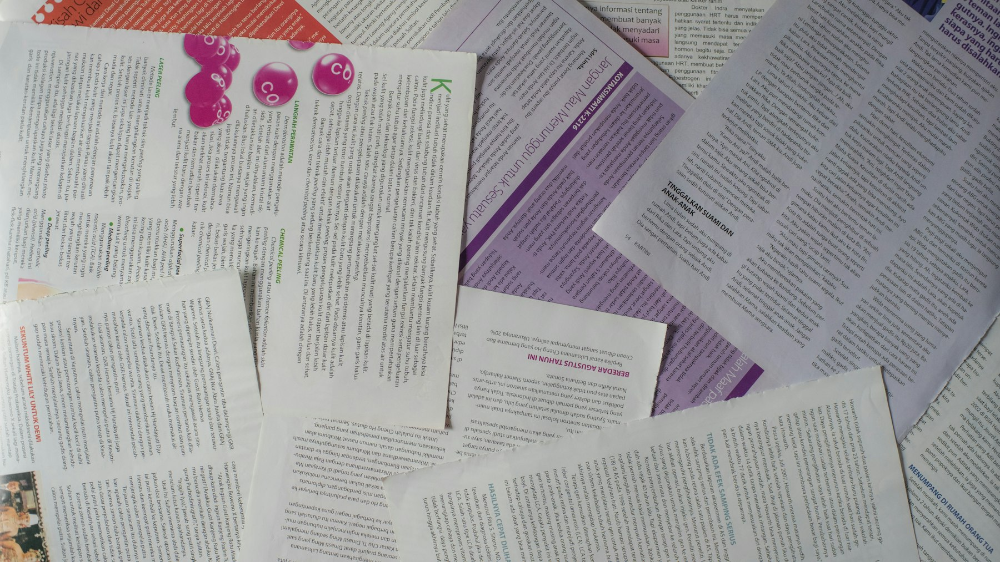

TL;DR
Establish a clear portfolio allocation plan with a 60/40 mix of stocks and bonds, focusing on easing into investments with low-cost index funds. Avoid common pitfalls like over-diversifying or neglecting fees.
New to Investing? Here’s Your Instant Guide
If you're new to investing, the choices can feel dizzying. You might be wondering what to actually do with your money, especially with so much conflicting advice out there. The best simple portfolio allocation for beginners often involves sticking to the fundamentals: a straightforward mix of assets that balances growth potential with risk management.
A classic recommendation is the 60/40 approach: allocate 60% of your investment into stocks (think broad-market ETFs like the S&P 500) and 40% into bonds (such as U.S. Treasuries or corporate bonds).
This allocation aims to provide growth while cushioning against market volatility, making it easier to stay the course during downturns. Ultimately, this dual approach not only enables beginners to understand their investments but also aligns neatly with long-term financial goals.
Why Common Portfolio Advice Often Misses the Mark
One major pitfall that trips up many new investors is the misconception that a well-diversified portfolio automatically leads to safety. Unfortunately, this often translates to over-diversification — think an overwhelming array of stocks, bonds, and even alternative assets like cryptocurrencies.
When you have too many assets, managing them becomes cumbersome, and instead of minimizing risk, it can dilute your returns significantly. Beginners often shy away from making impactful investment decisions due to the complexity of their portfolios.
This complexity can lead to analysis paralysis, preventing you from acting at all. Not to mention, there's always the risk that some of those unproven assets could tank without warning.
It’s crucial to remember: simplicity can often yield better results in the long run.
The Ideal Simple Portfolio: What’s in It?
Let’s get practical: for a beginner starting with, say, $1,000, a simple portfolio allocation might look like this: $600 in a stock market index fund (like the Vanguard Total Stock Market ETF
- VTI), and $400 in a bond fund (like the iShares U.S.
Treasury Bond ETF
- GOVT). This gives you exposure to overall market growth while adding a safety net through bonds. The stock portion typically aims for an average annual return of around 7% long term, while bonds might sit closer to 2-4%.
Your allocation percentages are also key, as they directly influence risk and potential reward. Stocks can be more volatile, swaying with market sentiment, so if you’re not comfortable with a 20% swing in your portfolio’s value, lean more toward bonds.
Additionally, keeping a close eye on your fees—such as expense ratios for those ETFs—can make a significant difference in your net returns.
A Real Scenario for Beginner Investors
Imagine a beginner investor who decides to start their investment journey with just $100 each month. Rather than waiting to accumulate a larger sum, they develop a consistent, simple investment strategy that can yield significant benefits over time.
For instance, in their first month, they allocate $60 into a broad market ETF, such as the S&P 500 ETF (SPY), which tracks the performance of the top 500 companies in the U.S. This provides them with exposure to a diversified selection of stocks from various sectors.
They might choose to allocate another $20 into a dividend ETF, like the Vanguard Dividend Appreciation ETF (VIG), which focuses on companies with a history of increasing dividends.
This not only helps in potential price appreciation but also offers a steady stream of income through dividends.
The remaining $20 is kept in cash or a short-term bond fund, like the iShares Short Treasury Bond ETF (SHV), to maintain stability during market fluctuations. This allocation is designed to safeguard their investment, ensuring they have liquid assets that can be accessed easily.
While the portfolio may appear small initially, especially after just a few months, the real shift happens in their behavior. They concentrate on making consistent contributions, which, after a year, totals $1,200. By making small investments over time, they are minimizing the temptation to time the market—a common pitfall for new investors, often leading to frustration and losses.
Consider the scenario of Sarah, a novice investor. After a year of following her $100 monthly plan, she sees that her S&P 500 ETF has returned about 10%, while her dividend ETF has yielded around 5%.
By the end of the year, her broad market ETF has grown to approximately $726, while her dividend ETF has reached about $240. The cash reserve of $240 provides a buffer against market volatility and allows flexibility for future investment strategies.
Sarah has not only contributed $1,200 but has also nurtured a long-term investment mindset. By observing how her portfolio reacts to market changes—both rising and declining—she learns valuable lessons about risk tolerance and the importance of patience. This experience lays a sturdy foundation for more complex investment strategies in the future.
Common Pitfalls: What Can Go Wrong?

Even with the best strategies, mistakes can be costly. One glaring error is chasing hot stocks. Perhaps you read about a tech stock surging and decide to invest all of your portfolio for a potential quick buck.
If that stock plummets, not only are you left with losses, but you’ve also jeopardized your diversified approach. Similarly, another common oversight is neglecting fees. Many beginner investors don’t fully understand how expense ratios can eat into their returns.
For example, a seemingly small 1% fee on a $10,000 investment can cost you around $4,000 in potential earnings over 30 years. Lastly, panic selling is another trap; it’s natural to feel uneasy, but selling off your investments during a downturn usually just locks in your losses and can derail your long-term strategy.
Checklist: Your Steps to Start Investing Today
Ready to take the plunge? Here’s a straightforward checklist to help you set up your initial portfolio. First, set your budget—decide how much you can afford to invest monthly, ideally at least $100 to make it worthwhile.
Next, choose your assets: the mix of stocks and bonds we discussed is a robust starting point, but feel free to adjust based on your risk tolerance. Review your portfolio quarterly to assess performance.
Are your stocks steadily improving? Are your bonds providing the stability you need? Rebalancing might be necessary if your stock portion grows to, say, 75%. Lastly, don’t forget to educate yourself continuously about your investments.
Knowledge is power, and understanding market trends will equip you to make informed decisions in an evolving landscape.
FAQ
What is a simple portfolio allocation for beginners?
A simple portfolio allocation for beginners often includes a mix of 60% stocks and 40% bonds, investing primarily in index funds for ease.
How should I start investing with a small amount?
You can start investing with a small amount by setting up an account with a broker that allows fractional shares, starting with as little as $100.
Investing can be daunting, but taking it step-by-step makes it achievable.
Next step
Use the article as a decision point, not just reading material. Your next system matters more than more browsing.
Search more articles
Find related tools, workflows, and guides.
Photo credits
- Photo 1: Bhavya Kashyap via Unsplash
- Photo 2: Vitaly Gariev via Unsplash
- Photo 3: Matheus Bertelli via Pexels
- Photo 4: jarmoluk via Pixabay
- Photo 5: Andre William via Unsplash